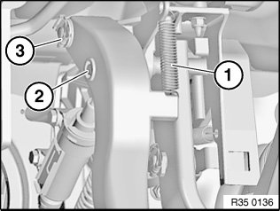
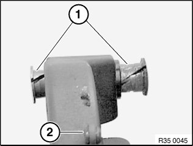

35 31 000 Removing and Installing or Replacing Clutch Pedal
35 31 000 Removing and installing or replacing clutch pedal

Necessary preliminary tasks:
- Remove pedal trim.
- If necessary, remove overcentre helper spring

Disconnect return spring (1).
Press end of pin (2) together with offset pliers and press out pin.
Detach locking clip (3) and pull clutch pedal off bearing block.
Installation:
Replace locking clip (3).
Locking clip (3) must be seated with both legs in the pin groove.

Installation:
Check bearing bushings (1) and replace if necessary.
Lightly grease bearing bushings (1).